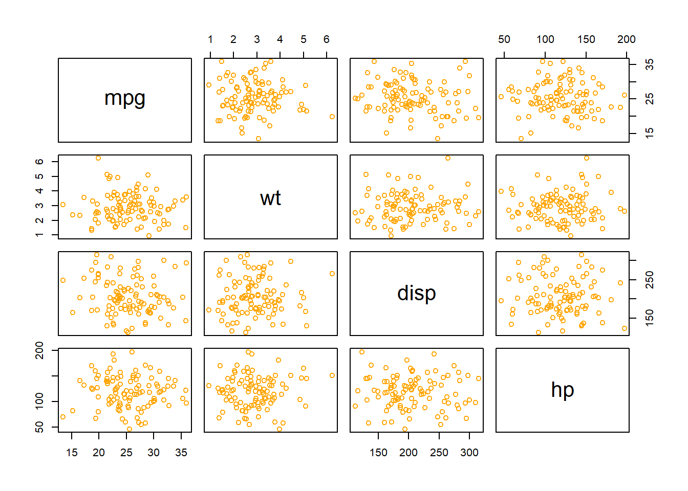
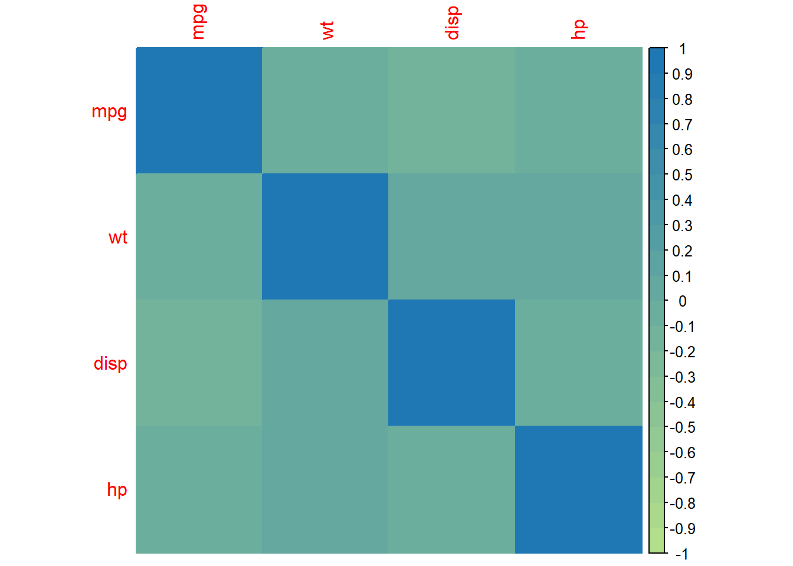
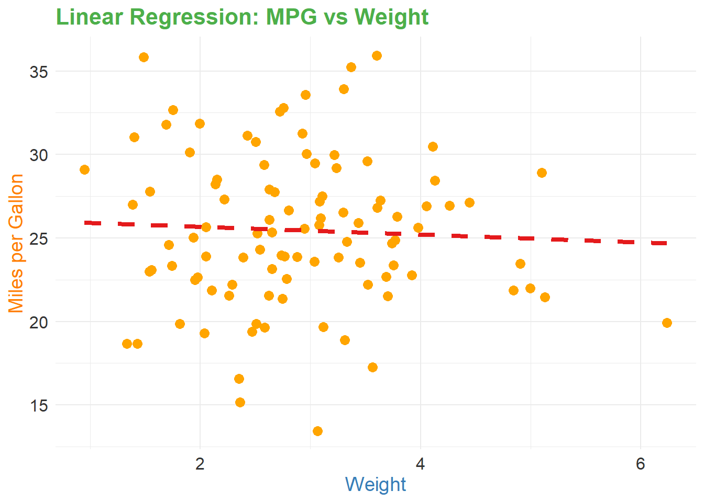

# Load necessary libraries
library(ggplot2)
library(corrplot)corrplot 0.92 loadedlibrary(caret)Loading required package: latticelibrary(Metrics)Warning: package 'Metrics' was built under R version 4.3.2
Attaching package: 'Metrics'The following objects are masked from 'package:caret':
precision, recall# Create a dataframe with random values
set.seed(123)
n <- 100
random_df <- data.frame(
mpg = rnorm(n, mean = 25, sd = 5),
wt = rnorm(n, mean = 3, sd = 1),
disp = rnorm(n, mean = 200, sd = 50),
hp = rnorm(n, mean = 120, sd = 30)
)
# EDA: Summary statistics and structure of the dataset
summary(random_df) mpg wt disp hp
Min. :13.45 Min. :0.9468 Min. :112.2 Min. : 46.02
1st Qu.:22.53 1st Qu.:2.1989 1st Qu.:173.4 1st Qu.: 98.12
Median :25.31 Median :2.7742 Median :201.8 Median :119.89
Mean :25.45 Mean :2.8925 Mean :206.0 Mean :118.91
3rd Qu.:28.46 3rd Qu.:3.4678 3rd Qu.:238.2 3rd Qu.:140.66
Max. :35.94 Max. :6.2410 Max. :314.7 Max. :197.14 str(random_df)'data.frame': 100 obs. of 4 variables:
$ mpg : num 22.2 23.8 32.8 25.4 25.6 ...
$ wt : num 2.29 3.26 2.75 2.65 2.05 ...
$ disp: num 310 266 187 227 179 ...
$ hp : num 98.5 97.4 91.8 88.4 106.9 ...# Scatter plots for selected relationships
pairs(random_df, col = "#FFA500")
# Correlation matrix visualization
correlation_matrix <- cor(random_df)
corrplot(correlation_matrix, method = "color", col = colorRampPalette(c("#B2DF8A", "#1F78B4"))(20))
# Linear Regression Model
# Assume mpg as the dependent variable and wt as the independent variable
model <- lm(mpg ~ wt, data = random_df)
# Model summary
summary(model)
Call:
lm(formula = mpg ~ wt, data = random_df)
Residuals:
Min 1Q Median 3Q Max
-11.9575 -2.9785 -0.2153 2.9612 10.6502
Coefficients:
Estimate Std. Error t value Pr(>|t|)
(Intercept) 26.1282 1.4516 18.000 <2e-16 ***
wt -0.2338 0.4762 -0.491 0.625
---
Signif. codes: 0 '***' 0.001 '**' 0.01 '*' 0.05 '.' 0.1 ' ' 1
Residual standard error: 4.582 on 98 degrees of freedom
Multiple R-squared: 0.002453, Adjusted R-squared: -0.007726
F-statistic: 0.241 on 1 and 98 DF, p-value: 0.6246# Predictions
predictions <- predict(model, random_df)
# Model evaluation
rmse_value <- rmse(predictions, random_df$mpg)
cat("Root Mean Squared Error (RMSE):", rmse_value, "\n")Root Mean Squared Error (RMSE): 4.535627 # Visualization of the linear regression line
ggplot(random_df, aes(x = wt, y = mpg)) +
geom_point(color = "#FFA500", size = 3) +
geom_smooth(method = "lm", se = FALSE, color = "#E41A1C", linetype = "dashed", size = 1.5) +
labs(title = "Linear Regression: MPG vs Weight",
x = "Weight", y = "Miles per Gallon") +
theme_minimal() +
theme(plot.title = element_text(color = "#4DAF4A", size = 16, face = "bold"),
axis.title.x = element_text(color = "#377EB8", size = 14),
axis.title.y = element_text(color = "#FF7F00", size = 14),
axis.text = element_text(color = "#333333", size = 12),
legend.position = "none")Warning: Using `size` aesthetic for lines was deprecated in ggplot2 3.4.0.
ℹ Please use `linewidth` instead.`geom_smooth()` using formula = 'y ~ x'